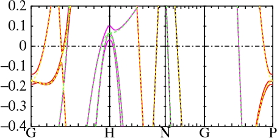
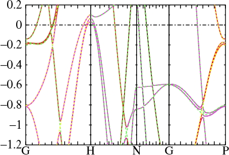
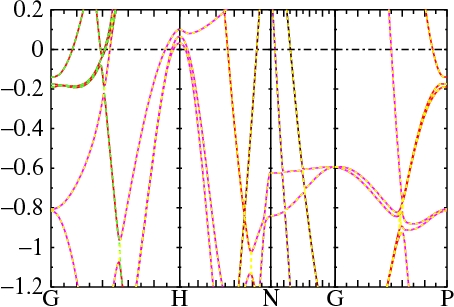

Turn on spin-orbit (SO) coupling with HAM_SO where SO is one of:
The SO=0 and SO=1 cases are very similar (Fe is a light element), but splittings can be seen. Note especially the splitting of the three states just above EF at H (EF=0 in the Figure), and the splitting of the t2g states at Γ near −2.3 eV. 
The figure on the right enlarges the region EF to better show the splittings, especially at H.
The next figure compares SO=2 and SO=1 cases (the potential is kept fixed).

You can see that the splitting at H is well captured by the Lz·Sz part of L·S.
There is a small splitting at Γ near −0.2 eV which Lz·Sz doesn't get quite right. Also you can see that there where two bands of the same spin cross in the Lz·Sz case, they get split with the full L·S; see for example midway between H and N, near −0.2 eV.
In the next figure SO=3 is comared to SO=1. 
The dashed lines almost perfectly overlay the solid ones, showing that the SO=3 approximation is nearly perfect,
except where two degenerate levels of the same spin come together.
Compare the region near −1 eV between Γ and H,
or near −0.9 eV between Γ and P. In the latter case, one crossing is not well described but the
agreement is subtantially improved relative to SO=2.
SO=3 also moves a little closer to the full SO=1 calculation
of the magnetic moment and charge density. In the Table below, the density was made self-consistent with SO=1.
In the RMS DQ line, a one-shot calculation was performed with SO=0,1,2,3, and
the data shows the deviation in density relative to the self-consistent SO=1 density after the first iteration.
The fully self-consistent magnetic moments are also shown for each approximation.
Evidently the Lz·Sz density and moment are further removed from the SO=1 result than with no SO coupling at all, while the SO=3 case is pretty close to the full result.
RMS change in the density starting from a self-consistent density without spin orbit coupling SO 0 1 2 3 RMS DQ 1.90e-5 0 3.13e-5 1.38e-5 M 2.24765 2.24861 2.24689 2.24814Only a few checks have been made, but preliminary estimates of SO contribution to total energy seem to well described by SO=3. For example, in the top level directory run the Fe test case :
fp/test/test.fp felz 4This test gives the following total energies. (Note: there seems to be a term missing in the total energy when SO=3. This hasn't been worked out yet.)
case ehf orb moment no SO -2541.03436 LzSz -2541.03450 -0.0492 L.S -2541.03478 -0.0513 L.S (pert) -2541.03478 -0.0492
Trying to avoid pitfalls when |λL+·S−| is large compared to |ε+−ε−| is a bit subtle. Exact diagonalization has pitfalls because there is no general way to unambiguously partition the eigenvalues into spin-up and spin-down parts, in other words, retain an unambiguous one-to-one correspondence between the eigenvalues and eigenfunctions.
We solve the problem as follows. First H0+Lz·Sz is diagonalized exactly, and the L+·S− parts are rotated to the basis of H0+Lz·Sz eigenfunctions. The residual L+·S− still has only off-diagonal blocks in spin space. Call the 12 block V with matrix element Vij, the ith spin-up eigenvalue ε+i and the jth spin-down eigenvalue ε−j.
In second order perturbation theory, matrix element Vij contributes a shift δε+i=|Vij|2/(ε+i−ε−j) to ε+i. The difficulty, as noted, is that the denominator can vanish or be small. But the standard technique to resolve this case, exact diagonalization, is problematic because it is no longer possible to assign a particular eigenvalue to a spin channel.
Instead we choose to do exact diagonalization on a subset of the matrix V: we diagonalize exactly the coupling Vij between the two elements ε+i and ε−j only. Thus, coupling involving two states alone is computed to all orders, while third order and higher order couplings that connect three inequivalent states is omitted. This works very well in practice, but omits splittings when three different states all become degenerate. You can see instances of this in the Fe figures, above. The effects are minor, but readily seen. It would be possible to include such couplings to still higher order, but this has not been done.
To show how the different approximations work, consider Au -- a heavy element with large SO coupling. The figures on the left and right compare the following approximations:
SO left right 0 (none) blue blue 1 (L·S) red red 2 (Lz·Sz) - green 3 (pert) green -Circles are photoemission data.
Blue and red are very different: L·S now generates shifts on the order of 1 eV.
Comparing green and red in the right figure it is evident, Lz·Sz causes some splitting but it is a poor approximation to L·S.
The perturbative approach, on the other hand, is rather good, even for this heavy element (compare green and red in the left figure). The difference is negligible on the scale of LDA errors (compare to photoemission data). With (L·S) so large, the charge density is modified. As the following table shows the perturbative L·S approach captures only about 1/3 of the density shift: essentially the same shift as Lz·Sz gets.
RMS change in the density starting from a self-consistent density without spin orbit coupling SO 0 1 2 3 RMS DQ 3.74e-4 0 2.58e-4 2.56e-4Fortunately the perturbation in charge density is still small: the bands look essentially similar whether the potential is generated from the converged SO=1 density, or made self-consistent. All three approximations SO=1,2,3 work with lmf, for LDA or LDA+U calculations. The QSGW code at present requires the spin channels be kept separate and works with SO=2,3 only.